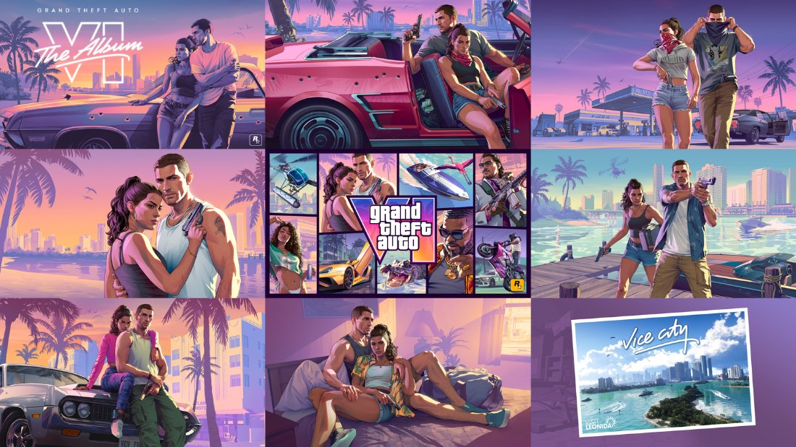

lzx的秘密基地记录一路上看到的、吃到的、想到的 |
|
| 首页 关于我 相册 爱好 音乐 写信给我 | |
|
我的爱好 听音乐 画画 玩电子游戏 二次元文化 |
我的爱好课余时间基本都花在这些事上，按上头的程度排，不分先后。
02
画画从临摹喜欢的角色开始，后来慢慢试着自己配色、画场景。画得谈不上多好，但把脑子里那点东西一点点落到纸上，这个过程本身就很解压。
03
玩电子游戏最近最期待的就是 GTA6。罪恶城那股霓虹味儿、开放世界随便逛的自由感，光看预告就够脑补一整趟旅行了。发售那天大概要请假。

04
喜欢二次元文化追番、看漫画、逛展，也收集一些喜欢的角色周边。喜欢它讲究分镜和色彩的那股劲儿，还有那种能把人一下子拉进另一个世界的想象力。 |
| 今天是 2026 年 11 月 22 日 | lzx的秘密基地 | 您是第 1 位访客 | |